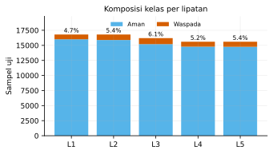
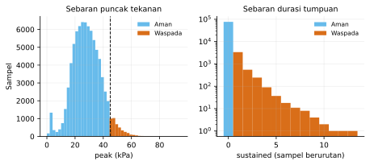
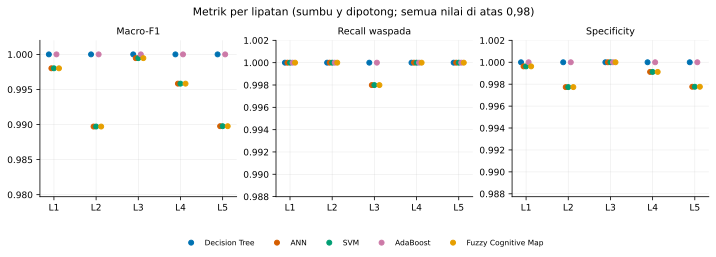
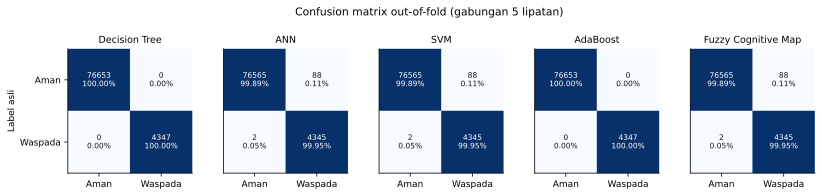
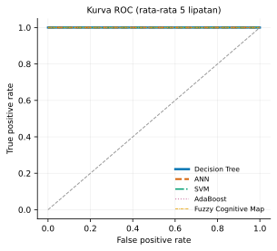
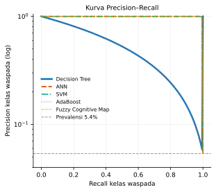
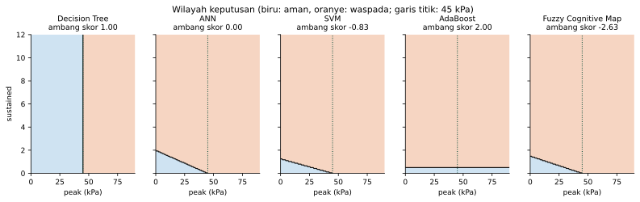
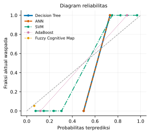
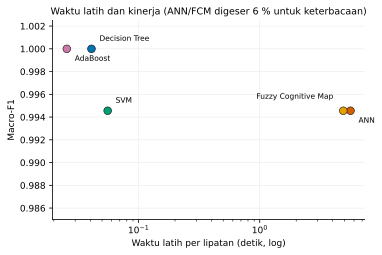
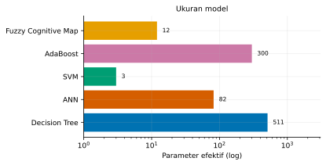

Perbandingan lima algoritma klasifikasi risiko tekanan plantar
Laporan ini membandingkan lima algoritma dari lima jurnal berbeda, pada data, lipatan, dan metrik yang sama dengan Random Forest produksi. Setiap pasien hanya muncul di satu sisi (latih atau uji), dan scaler hanya melihat lipatan latih.
1. Ringkasan eksekutif
- Macro-F1 tertinggi: Decision Tree, 1,000 ± 0,000.
- Semua model meniru aturan ambang pada data bersih. Itu konsekuensi label yang berasal dari aturan, bukan bukti keunggulan algoritma.
- Pembeda yang jujur ada pada kolom ketahanan (bagian 9): saat gain bergeser, seluruh model turun bersama dan urutannya berubah.
2. Dataset
Sumber DFN-DS (Zenodo MSSDA, CC BY 4.0), tersedia sebagai models/training-data.json v2.0 dengan kalibrasi kuantil dan aturan label dua kelas.
| Properti | Nilai |
|---|---|
| Pasien | 135 |
| Sampel | 81.000 |
| Sampel waspada | 4.347 (5.4%) |
| Rasio kelas | 18.6 : 1 |
| Fitur | peak (kPa). sustained (sampel) |


3. Protokol evaluasi
Lipatan dibuat groupedFolds di scripts/train-model.js dan diekspor ke models/folds.json, sehingga Random Forest dan kelima model diuji pada pasien yang sama. Skrip berhenti bila ada pasien yang masuk dua lipatan.
4. Konfigurasi model
| Model | Jurnal asal | Hiperparameter | Parameter |
|---|---|---|---|
| Decision Tree | Sheikh dkk. 2025, Scientific Reports 15:20962 | max_depth: 8, criterion: gini, class_weight: balanced | 511 |
| ANN | Darwich dkk. 2023, Baghdad Science Journal 20(6) | hidden_layer_sizes: [16], max_iter: 2000, activation: relu | 82 |
| SVM | Agrawal dkk. 2023, IEEE Access 11:23119-23126 | kernel: linear, C: 1.0, class_weight: balanced | 3 |
| AdaBoost | Agrawal dkk. 2024, Technologies 12:231 | n_estimators: 100, learning_rate: 0.5, base: decision stump | 300 |
| Fuzzy Cognitive Map | Ramirez-Bautista dkk. 2022, IEEE Latin America Transactions 20(7) | concepts: 3, steps: 2, lr: 2.0, epochs: 300, learning: BCE gradient, threshold: dipilih pada lipatan latih | 12 |
Tidak ada tuning hiperparameter. Tuning per model akan membuat perbandingan tidak sebanding dan angkanya bias optimis.
Ambang keputusan setiap model dipilih pada lipatan latih (bukan lipatan uji) dengan memaksimalkan macro-F1. Tanpa langkah ini model yang terkalibrasi baik, seperti FCM dengan BCE, menghasilkan probabilitas di sekitar prevalensi kelas dan tidak pernah melewati 0,5 sehingga seluruh kelas waspada terlewat walaupun peringkatnya sempurna. Ambang rata-rata per model: Decision Tree 1,0000, ANN 0,2007, SVM -0,4480, AdaBoost 2,0000, Fuzzy Cognitive Map -2,6092.
5. Hasil utama
| Model | Akurasi | Macro-F1 | Precision (waspada) | Recall (waspada) | Specificity | AUC | Latih (dtk) |
|---|---|---|---|---|---|---|---|
| Decision Tree | 1,000 ± 0,000 | 1,000 ± 0,000 | 1,000 ± 0,000 | 1,000 ± 0,000 | 1,000 ± 0,000 | 1,000 | 0.04 |
| ANN | 0,999 ± 0,001 | 0,995 ± 0,005 | 0,980 ± 0,018 | 1,000 ± 0,001 | 0,999 ± 0,001 | 1,000 | 5.29 |
| SVM | 0,999 ± 0,001 | 0,995 ± 0,005 | 0,980 ± 0,018 | 1,000 ± 0,001 | 0,999 ± 0,001 | 1,000 | 0.06 |
| AdaBoost | 1,000 ± 0,000 | 1,000 ± 0,000 | 1,000 ± 0,000 | 1,000 ± 0,000 | 1,000 ± 0,000 | 1,000 | 0.03 |
| Fuzzy Cognitive Map | 0,999 ± 0,001 | 0,995 ± 0,005 | 0,980 ± 0,018 | 1,000 ± 0,001 | 0,999 ± 0,001 | 1,000 | 5.21 |
Rata-rata ± simpangan baku antar lima lipatan. Recall kelas waspada adalah metrik utama: melewatkan tekanan berbahaya lebih mahal daripada alarm palsu.
5.1 Pembanding dari pipeline produksi (Random Forest)
| Skema | Akurasi | Macro-F1 | Precision (waspada) | Recall (waspada) |
|---|---|---|---|---|
| Aturan murni (baseline) | 1,000 | 1,000 | 1,000 | 1,000 |
| Random Forest + class-weight | 1,000 | 1,000 | 1,000 | 1,000 |
| Random Forest + SMOTE (produksi) | 1,000 | 1,000 | 1,000 | 1,000 |
Angka ini berasal dari docs/evidence/metrics.json (pipeline JS), bukan dilatih ulang di Python, tetapi memakai lipatan pasien yang sama sehingga sebanding. Ketiga skema identik 1,000 karena label berasal dari aturan; SMOTE dan class weighting tidak bisa memperbaiki batas yang sudah sempurna.

6. Confusion matrix

7. Kurva ROC dan Precision–Recall


8. Batas keputusan dan kalibrasi

Temuan yang harus disebut di Bab IV: pada dataset ini sustained ≥ 1 setara dengan peak ≥ 45 kPa untuk seluruh 81.000 sampel, karena sustained dihitung sebagai panjang run di atas ambang yang sama. Artinya masalah klasifikasinya efektif satu dimensi: model cukup memakai salah satu fitur untuk sempurna. Ini keterbatasan desain label, bukan keunggulan algoritma, dan alasan tabel hasil bersih tidak boleh dipakai untuk memilih model.

9. Ketahanan terhadap galat kalibrasi

sustained dihitung ulang dari deret tergeser.| Model | ×0.9 | ×1.0 | ×1.1 | ×1.2 | ×1.3 |
|---|---|---|---|---|---|
| Decision Tree | 0,784 | 1,000 | 0,823 | 0,696 | 0,609 |
| ANN | 0,790 | 0,995 | 0,818 | 0,693 | 0,606 |
| SVM | 0,790 | 0,995 | 0,818 | 0,693 | 0,606 |
| AdaBoost | 0,784 | 1,000 | 0,824 | 0,697 | 0,609 |
| Fuzzy Cognitive Map | 0,790 | 0,995 | 0,818 | 0,693 | 0,606 |
| Aturan murni | 0,784 | 1,000 | 0,824 | 0,697 | 0,609 |
Baseline aturan dipakai sebagai jangkar: bila angka ×1,1 dan ×1,2 tidak mendekati 82,4 % dan 69,7 % dari paket bukti sebelumnya, porting perhitungan sustained salah.
10. Kompleksitas dan on-device


Kelayakan perangkat ditentukan biaya inferensi dan ukuran kode, bukan akurasi. Model linear (SVM, FCM) paling murah, tetapi keduanya memerlukan normalisasi masukan yang harus ikut dikalibrasi di perangkat.
11. Analisis kesalahan
| Model | False negative | False positive | FN / total waspada |
|---|---|---|---|
| Decision Tree | 0 | 0 | 0.00% |
| ANN | 2 | 88 | 0.05% |
| SVM | 2 | 88 | 0.05% |
| AdaBoost | 0 | 0 | 0.00% |
| Fuzzy Cognitive Map | 2 | 88 | 0.05% |
Kesalahan yang paling mahal adalah false negative: sampel waspada yang diprediksi aman, karena pasien tidak menerima peringatan.
12. Batasan dan reproducibility
- Label berasal dari aturan; macro-F1 mendekati 1 berarti model meniru aturan, bukan tervalidasi secara klinis.
- Tidak ada tuning hiperparameter dan tidak ada seleksi fitur.
- Belum ada data uji eksternal (subjek diabetes baru); semua angka adalah validasi silang pada DFN-DS.
- Seed 42, scikit-learn 1.9.1, NumPy 2.5.4; dua kali jalan menghasilkan JSON identik.
Reproduksi:
node scripts/export-folds.js
uv run --with scikit-learn --with matplotlib python scripts/compare-models.py